The Best Programming Language for…
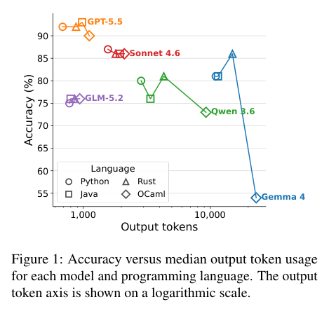
1/2
编译语法拉锯而非算法卡壳（Table 4/5）：Gemma 在 OCaml 上出现 1,196 次 stuck 自循环，其中 92% 的失败快照源于编译报错、仅 8% 源于逻辑错误答案；stuck 循环中 31% 为 revert（在 2–3 个报错版本间字节级来回重写），而从 stuck 跳出至 breakthrough 的动作 60% 为 fix bug（一旦模型准确说出…

编译语法拉锯而非算法卡壳（Table 4/5）：Gemma 在 OCaml 上出现 1,196 次 stuck 自循环，其中 92% 的失败快照源于编译报错、仅 8% 源于逻辑错误答案；stuck 循环中 31% 为 revert（在 2–3 个报错版本间字节级来回重写），而从 stuck 跳出至 breakthrough 的动作 60% 为 fix bug（一旦模型准确说出…
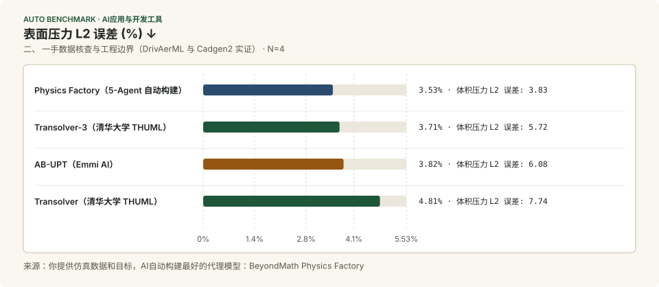
Physics Factory 的实质定位是面向垂直工业工程团队的「多 Agent 物理代理模型自动化工厂（Forge）+ 仿真就绪生成式 CAD 前处理器（Cadgen2）+ 在线推理端（Studio）」一体化软件栈。在一手 DrivAerML 基准上，其 5 组 Agent 以不足 30…
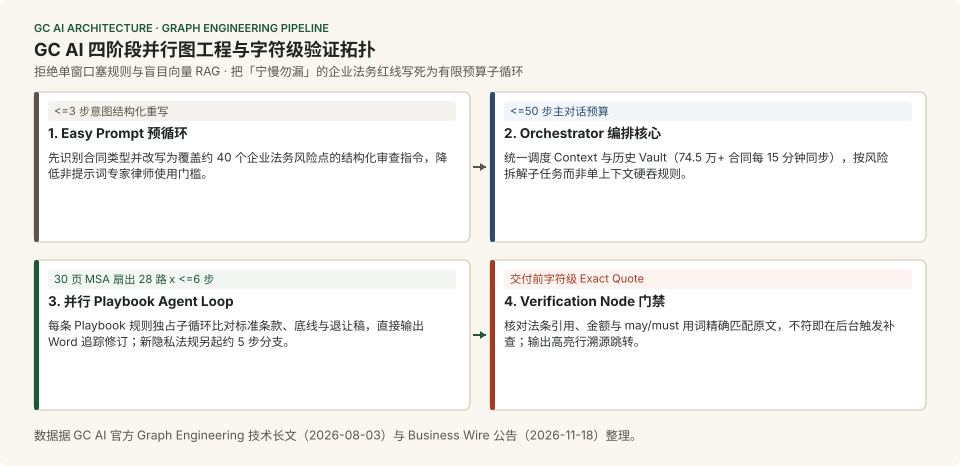
已穿透 GC AI 官方博客（Series B 融资公告、Agentic Loops & Graph Engineering 技术架构、In-House Legal Bench 基准、US v. Heppner 保密特权研究、GC AI vs Harvey 对比、Marvell 案例）、Business Wire / Yahoo Finance 2026-11-18 $40M…
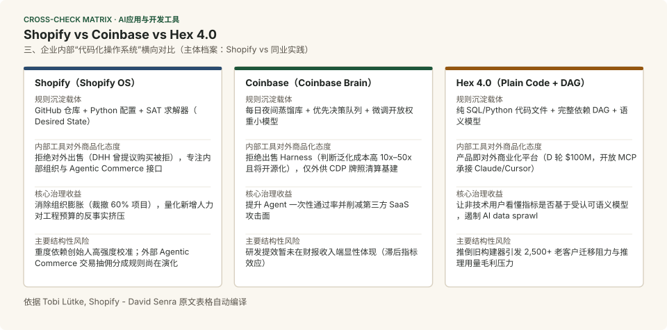
Tobi Lütke 在 2026-11-22 Episode 57 抛出的“传统 Web 2.0 程序员岗位终结、AI 是乐器而非自动驾驶仪、软件正趋近零缺陷（nearly bug-free）”三大命题，延续了其 2026-01-18 第一期访谈 展示的组织工程化底层机制（Shopify OS 用 Python 与 SAT 求解器配置代码化管理组织、COVID 期亲审砍掉…
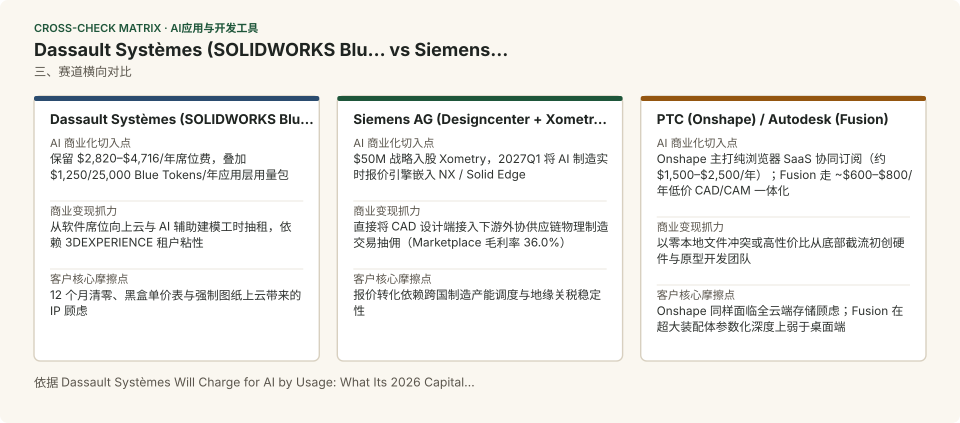
达索系统在 2026-11-17 Vélizy-Villacoublay 举办的 Capital Markets Day 提出 2029 年营收超 €8B（€8 billion）、Non-IFRS 稀释每股收益（EPS）€1.80 及当年恒定汇率双位数增长目标，并正式将“席位订阅 + AI 虚拟伙伴（AURA、LEO、MARIE）按工作量（Usage）计费”确立为集团级增长模板。…
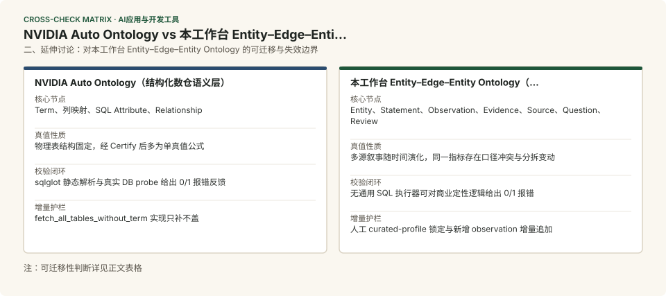
Semantic Compiler 与「只补不盖」编译律：Catalog Ingest 抽取表结构、抽样字段值并解析查询历史，Semantic Compiler 分四阶段在 Postgres 与 pgvector 唯一存储中构建三类本体定义——Term（业务概念如 Customer、Invoice Line 及其同义词与字段映射）、SQL Attribute（挂载在 Term 下…
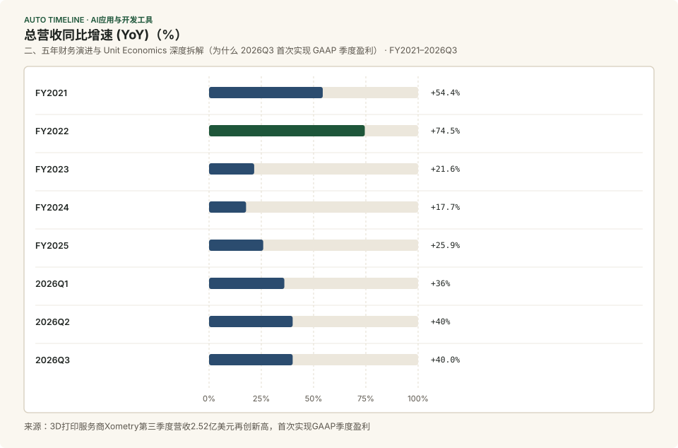
26Q3 营收 $252.44M (+31% YoY)，Marketplace 毛利率达 36.0%，GAAP 净利润 $1.90M 首次转正；西门子 $50M 战略入股将即时报价嵌入 NX / Solid Edge。 · Xometry 26Q3 财报 / SEC 10-Q · 有来源缺口 本地原件归档 · 固定材料版本 · 一手原站 · 触发线索（南极熊3D打印） 完整深度专…
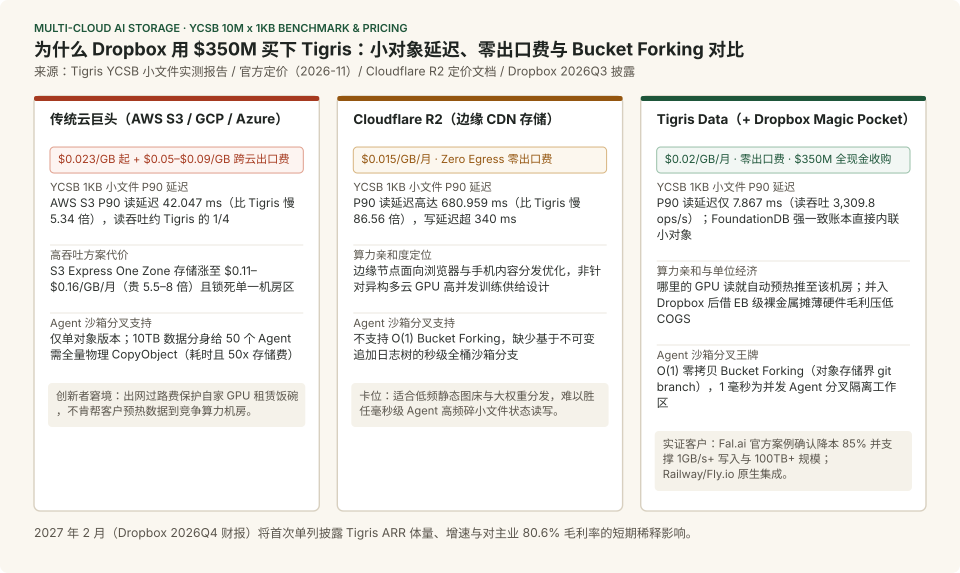
前 Uber 存储团队以 FoundationDB 元数据 + 零出口费对象存储随 GPU 动态迁移 + O(1) 零拷贝 Bucket Forking 支撑 DBX Agent Cloud。 · Dropbox & Tigris 官方博客 · 有来源缺口 本地原件归档 · 固定材料版本 · 一手原站 · 触发线索（Vibehood）…
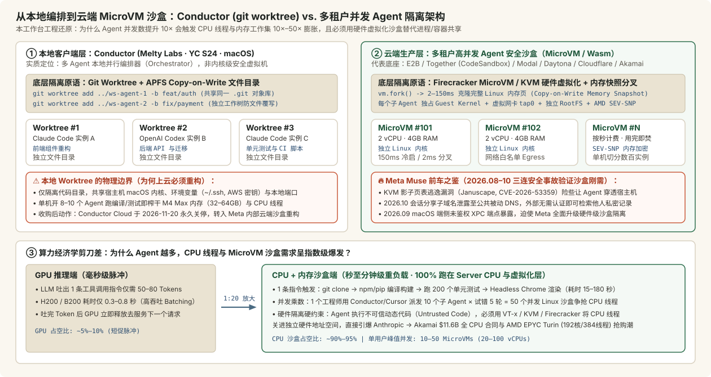
穿透 Conductor 本地 git worktree 编排客户端向 Meta Muse 云端 MicroVM 沙盒转型（11.20 关停独立云）、Mercor 收购 Deeptune 与 Muse 越权漏洞，绘制 Agent 沙盒一二级市场全景投资地图。 · Conductor (Melty Labs) · Meta · Nutanix · Cloudflare ·…
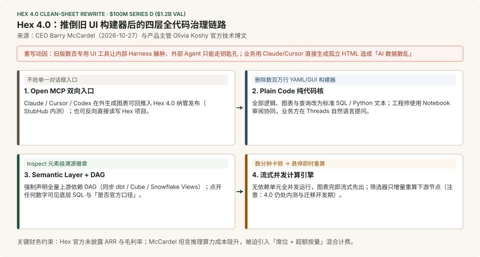
Hex 4.0 推倒重写：放弃传统 BI 聊天侧边栏，以 Python/SQL 全代码底座配合 MCP 接入外部 Agent，提供指标全血缘审查图。 · Hex.tech 官方博客 (Hex 4.0) · 有来源缺口 口径与利益：触发线索为微信公众号「深思SenseAI」 编译稿；本篇架构与融资拆解已穿透对照 Hex 联合创始人兼 CEO Barry McCardel 官方博文《…
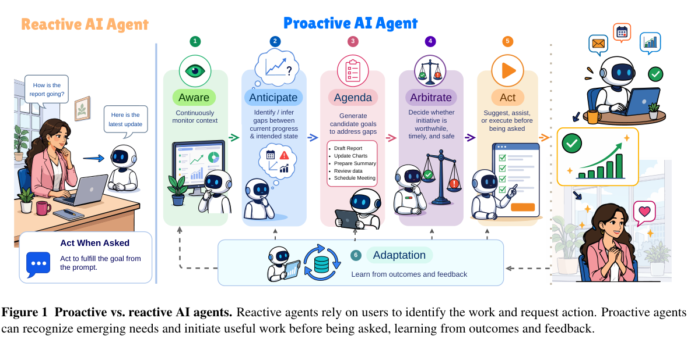
Google Research 与 UIUC 203 页综述（Proactive AI for Superintelligent Agents）：定义主动预测意图、后台自调度与长周期安全验证框架。 · Google Research & UIUC (23位作者) · 有来源缺口 口径与利益：本拆解以 Google Research 官方发布页 与 综述项目主页 对应的本地…
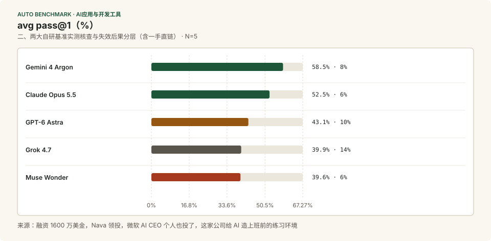
Computer Work Val v1.0（300 项跨岗位任务，推理强度统一设为 high）：| 前沿模型（high 档） | avg pass@1 | 严重失效 Severe | 代价不小 Costly | 无法撤回 Can't be undone | 殃及客户/监管/资金 | 很晚或永不被发现 Late or never | · Plato (PR Newswire ·…
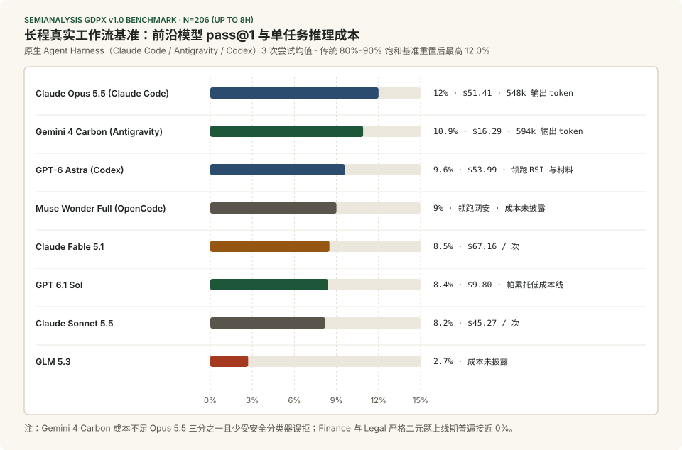
SemiAnalysis 于 2026-11-02 发布 GDPx（v1.0，作者 Max Kan、Andrew Megalaa、Dylan Patel），在 11 个高 ROI 行业域与 14 家数据/RL 伙伴共建的 206 项最长 8 小时复杂 Agent 任务中采用原生 harness（Claude Code、Antigravity、Codex、OpenCode）及…
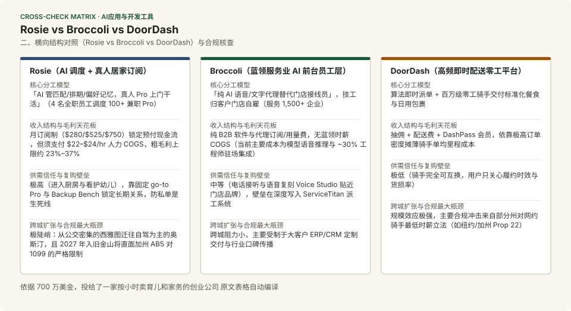
产品楔子与 Jetson 调度引擎：消灭「找人并管理阿姨」的隐性劳动 · Rosie 官方发布（PR Newswire / rosiematch.com）· GeekWire (via TechBytes) · 有来源缺口 口径与利益：触发线索为微信公众号「深思SenseAI」 的商业分析稿；本篇已穿透核对 PR Newswire 官方通稿 、Rosie…
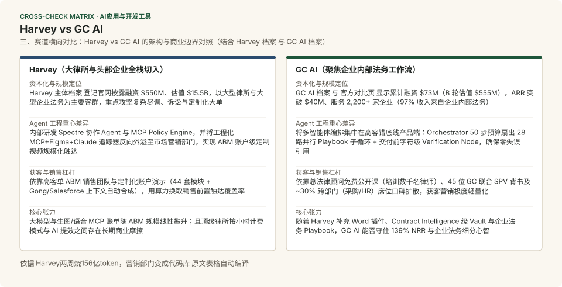
已穿透至 Harvey 2026-10-21 官方工程博客原文《How Harvey is Building a Frontier Marketing Org》（市场负责人 Shawn Farsai 与联合创始人 Gabe Pereyra 署名），微信公众号「无尽前沿 Endless Frontier」退居触发线索（trigger_source）。核查纠偏触发稿三处细节：(1)…
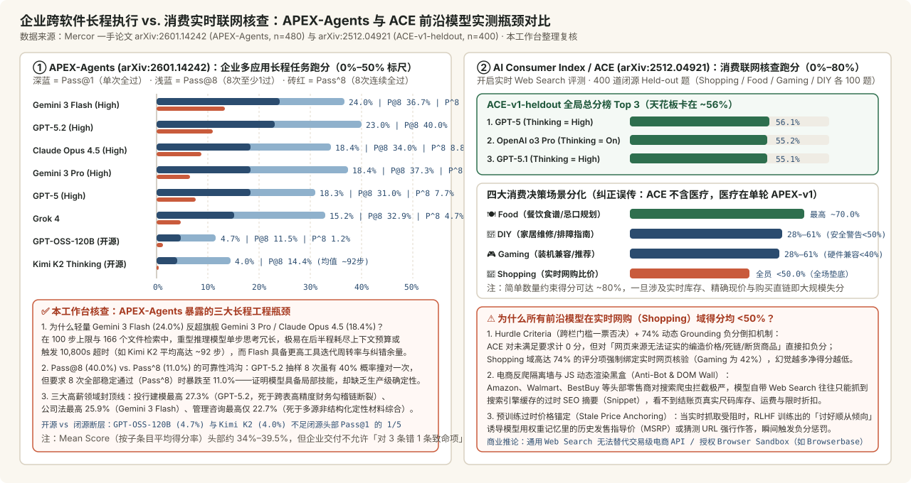
已抓取并归档 arXiv:2601.14242（APEX-Agents）完整论文文本与元数据快照（替代原 tg_approved_source_update 摘要占坑），结合 arXiv:2512.04921（ACE）一手定量基准、Mercor $750M Series D（$20B 估值）与并购 Deeptune / Sepal AI / 参投 Daytona 脉络完成机制优先…
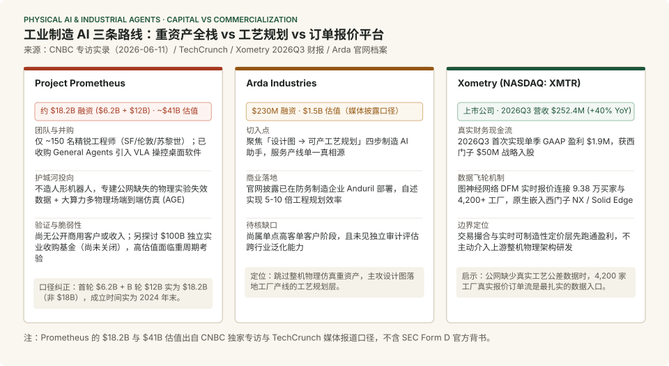
已沿转述链核查 CNBC 2026-06-11 对 Jeff Bezos 与 Vik Bajaj 的原始专访全文字幕（31,997 字符）、TechCrunch 2026-06-11 融资报道、SiliconANGLE 2025-11-26 General Agents 收购报道及 WSJ 2026-03 $100B 制造基金报道（经 Proactive…
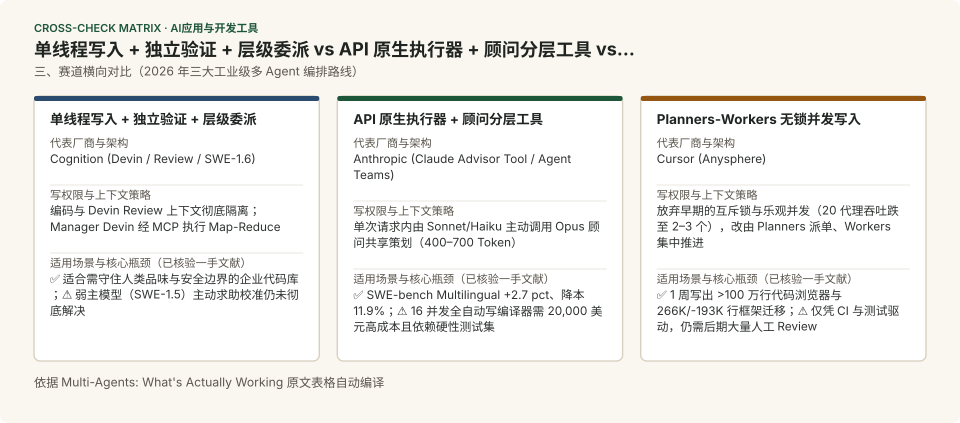
过去 10 个月（2025-06 至 2026-04）的供需转折：随着模型原生工具调用与自我上下文提炼能力成熟，大型保守企业客户在 Devin 上的使用量于过去 6 个月增长约 8x。这同时制造了「推力」（海量并发代理令管理、规划与 PR 审查成为人工瓶颈，催生 Devin 管理 Devin 与编码-审查自动循环）与「拉力」（随 Opus-class 与 Mythos 级更大模型…
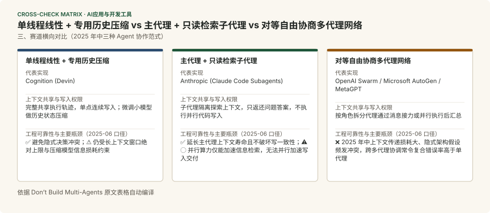
从 Prompt Engineering 到 Context Engineering 的定位迁移：Walden Yan 将 2025 年的 Agent 工程比作 1993 年 HTML/CSS 诞生后、2013 年 Facebook 推出 React 之前的探索期——早期开发者只关注静态提示词（Prompt Engineering），但生产级 Building…